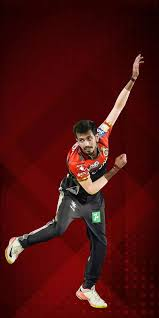

TEAM STATISTICS
Explore Royal Challengers Bangalore's performance metrics, player statistics, and records throughout IPL history.
Most Runs

Virat Kohli
7,263 runs
Most Wickets

Yuzvendra Chahal
139 wickets
Most Catches
AB de Villiers
90 catches
Performance Analysis
Visual representation of RCB's performance metrics over the years.
Season-wise Win Percentage
Chart visualization will appear here
Batting vs Bowling Performance
Chart visualization will appear here
Top Run Scorers Across Seasons
Chart visualization will appear here